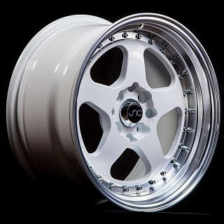
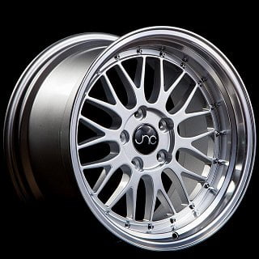
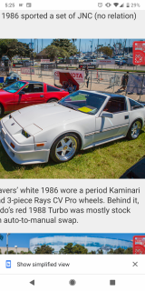
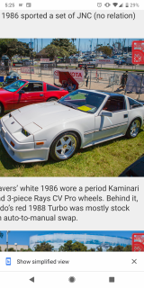
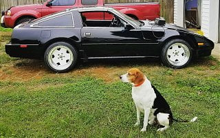
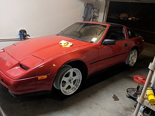
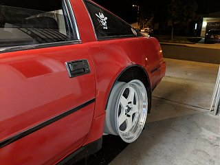
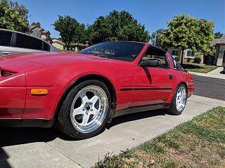

-
So I'm up in the air with these 2 wheels. JNC 005 and the JNC 010. Both in a white face with machines lip. JNC010 17x9+25 and JNC005 17x8.5+30.
I can also run it in an 18 setup. JNC010 18x9+30 and 18x10+30. JNC005 18x9+34 and 18x10+25.
I understand I'll need spacers or adapters for these setups. I'm leaning more towards the 5 spoke 010's. they look like knock off Rays CV Pros.
These will be on my Aztec red 88T on Powertrix.
Which looks better?
 Some people never go crazy. What truly horrible lives they must lead. -
I think the JNC005 would look the best. I think straight multi-spoke wheels look good on the Kouki's, but the 010 wheel is a bit too busy. I don't know the model but if you want more spokes Enkei makes a wheel that is basically a knock off of the Skyline R33 wheels that I think would look ok on a Z31. Mine's Aztec Red too and I think bronze wheels would look good with that color. If you do get these wheels, let us know what they look like and what spacers you used. Good luck! -
If the 010 weren't drilled for multi lug pattern, i'd be more inclined to like them. I also like the 005 as you can almost never go wrong with mutlspoke/BBE style mesh on these cars. I was thinking of going with a staggered set of white 005's for my SS, 18's in the rear and 17's up front. I like the black mesh on my 84T, but wish i could find some 17's for up front, but they're NLA.
Agreed with the bronze and aztec red combo, especially in some TE37 or knockoff.
84 AE/Shiro #683/Shiro #820/84 Turbo -
If you can see this, I like the straight spokes of this style wheel. Enkei RPF1 is the R33 looking wheel I referenced earlier.
Powertrix Whale Tail.JPG
Enkei RPF1.JPG
-
I really am digging the white wheel/ red car look. I also loved spokes and lips. I would run deep dish rep mustang wheels but so many people have them. Not bad, I just want to look different.
I like the weight of the enkeis (17lbs in an 18") but I like machined lips are the bee's knees on z31s.
I haven't thought about 17/18 combo. Is there any advantage to that other than price?Some people never go crazy. What truly horrible lives they must lead. -
No advantage really, more of a disadvantage since you can't rotate your tires but, it is sexy AF with the right wheel and suspension. Gregs SS is what convinced me, shit 9 years ago:I haven't thought about 17/18 combo. Is there any advantage to that other than price?
VQ9S4Im.jpg
iirc, he was just running ST springs back then.
84 AE/Shiro #683/Shiro #820/84 Turbo -
That does look pretty sexy. I'm convinced now. A little secret is Im never really on top of rotating my tires at the intervals anyway.
I've got some xxr 18x8.75+20 on now with a 12mm spacer in front and 1" adapter in back. I plumbed a couple workers intercooler on his 3000gt na2tt for them but I don't really like them and they came with old ass 255/40s on them. They rub the back a little when I hammer it after a roll and pull on the fenders.
I'm really digging the white cars overall stance below. The zenki/kouki isnt much if a difference. 
Some people never go crazy. What truly horrible lives they must lead.

Some people never go crazy. What truly horrible lives they must lead. -
The 17's fit well, be aware of how it will effect your RPM/gearing for your intended use. The 18's will be much happier for daily+cruising.
Those offsets are terrible, in my opinion for a 9wide up front you should aim for +5mm to +10mm, for 10wide out back go for 0mm offset. This may require the fender lips be rolled.
For reference these are similar style 17" SSR longchamp cavalier prestige, 10F/10.5R at an estimated -15mm offset, rolling 255's F+R the front needs to be taken down to 8.5 or 8 wide to clear for hard corning.
Commit and get the proper offset. If they are true 3pc, you can fine tune it for the fit and look you desire. -
Those wheels are awesome!! I already rolled my fenders and pulled the rear a little. Z_Karma has me convinced on 18r/17f setup I'm looking for the closest I can get to 0. I don't have the funds to spend money on a set a 3 piece wheels. I am trying to disperse money across the whole car, not just wheels and tires. My car is used for daily/crusing and I have some canyons near by now that I'm stationed in CA that I would like to try out.Originally posted by 88sinZ View Post
Some people never go crazy. What truly horrible lives they must lead. -
save up, fit your set, spend the money. you will never regret it, you will regret pissing away time and money on things that dont work. -
So I ended up with the JNC010's. 18x9 and 17x8. I'll be getting Firestone Fire Hawk Indy 500s next month. After that, I can start on performance again. I need to rebuild my "new to me" Precision 6063 and find an external wastegate, then Nistune from Zack. Some people never go crazy. What truly horrible lives they must lead. -
i understand you were zealous and hungry, those firehawks are trash. the fit looks good tho. follow up bro -
I havent bought tires yet, waiting on uniform allowance. I've read nothing but good reviews of those tires and they are number 2 on the tire rack performance tire. Why do you say they are trash and what tire around that price point do you reccomend?Originally posted by 88sinZ View PostSome people never go crazy. What truly horrible lives they must lead. -
If it's your daily driver, go ahead with the firehawks.
I've ran about 4 set sets of tires from Michelin to garbo rubber.
The wear rate is most important, a higher wear rate will be a more slippy tire… but you will get increased mileage before they wear out
For 1/3 the cost you can run federal 595 RS-R's have them grip like bubble gum, they will wear fast but in the end you can afford multiple sets - this helps if you may make wheel changes in the near future -
Ended up with Firehawk indys, 245/40r18 and 215/45r17. I like it but will go with bigger tires front and back next.Some people never go crazy. What truly horrible lives they must lead.

Copyright © 2006–. All rights reserved. Privacy Policy